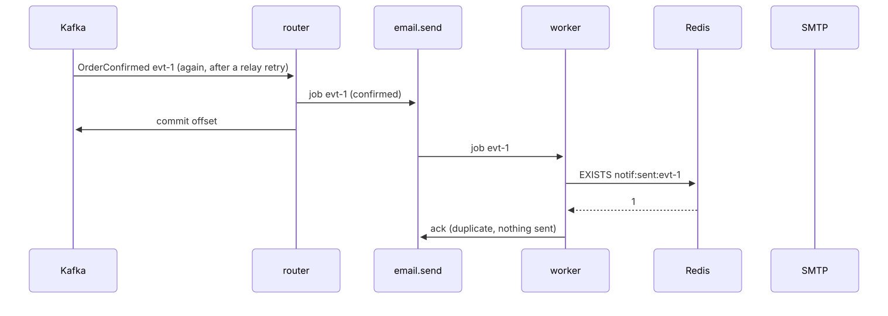
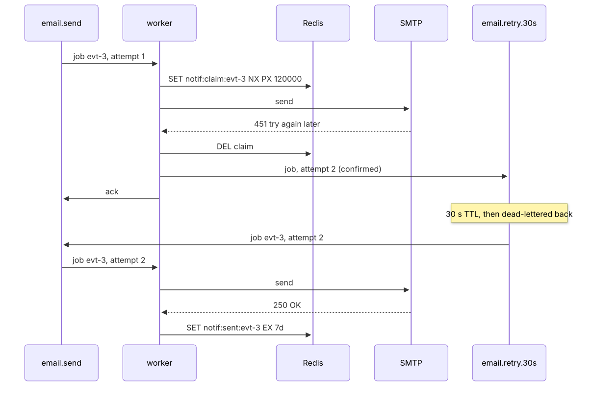

notification-service: low-level design#
Part of the e-commerce system design. Animated version: walkthrough.
1. Responsibilities#
| Does | Does not |
|---|---|
Turn OrderConfirmed and OrderCancelled into emails |
Decide anything about orders |
| Send transactional email before bulk email | Store emails (the provider and Mailpit do) |
| Retry temporary failures with growing delays; set aside the rest | Retry forever: 5 attempts, then email.dead |
| Send each event's email once, even when the event arrives several times | Promise exactly once: see §2 |
Email jobs are tasks, not facts. A work queue with acknowledgements, priorities and delayed retries fits better than a Kafka topic, where one slow email would hold up a whole partition.
2. Guarantees#
| Guarantee | How |
|---|---|
| No event is lost | The router commits a Kafka offset only after RabbitMQ confirms the job (persistent, quorum queue). If RabbitMQ is down the router retries with back-off and the offset waits |
| One email per event, in practice | Before sending, the worker checks notif:sent:<eventId>, then takes a 2-minute claim notif:claim:<eventId> with SET NX PX, sends, and records notif:sent for 7 days (Kafka's retention). Duplicates find the sent key; concurrent duplicates lose the claim and are retried later |
| Never zero emails | A failed send releases the claim. A crash after sending but before recording can send a second email (SMTP has no idempotency key): at least once, with a very small duplicate window |
| Redis down never causes duplicates | Without the sent log the worker cannot tell a duplicate apart, so it parks the job in the first delay queue rather than send |
| Order emails first | Quorum queues (RabbitMQ 4) deliver priority ≥ 5 before the rest; order emails are priority 8, bulk mail 1 |
| Poison never blocks | Unreadable events → order.events.dlq; permanent SMTP rejections (5xx) and jobs failing 5 times → email.dead; unreadable jobs → email.dead as they are |
3. Module diagram#

4. Interaction diagram#

5. Sequences#
Duplicate event#

Temporary failure, then success#

6. Retry ladder#
| Attempt fails | Next | Waits |
|---|---|---|
| 1 | attempt 2 | email.retry.30s |
| 2 | attempt 3 | email.retry.2m0s |
| 3 | attempt 4 | email.retry.10m0s |
| 4 | attempt 5 | email.retry.10m0s |
| 5, or any 5xx | — | email.dead |
Delay queues have no consumer: a message waits out the queue's x-message-ttl, then RabbitMQ dead-letters it back to the email
exchange (at-least-once dead-lettering, so it cannot be dropped on the way). No scheduler, no polling.
7. Scaling and performance#
- Router: cheap; bounded by the 12 partitions of
order.events, so 2 replicas are plenty. - Worker: bounded by SMTP latency. 20 jobs in flight per pod (prefetch 20, 20 goroutines); KEDA adds pods when
email.sendholds more than 200 jobs per pod. About 30 MB of memory per pod; starts in milliseconds. - Redis: two small keys per email; 7-day expiry keeps the set bounded by a week of orders.
8. Failure handling#
| Failure | Behaviour |
|---|---|
| RabbitMQ down | Router retries the record with back-off (offset not committed); the process exits on a lost connection and Kubernetes restarts it |
| Redis down | Jobs wait in the first delay queue; no emails sent, none duplicated |
| SMTP down or 4xx | Retry ladder; after 5 attempts email.dead |
| SMTP 5xx (bad address) | email.dead at once |
| Worker crash mid-send | Unacknowledged job is redelivered; the claim expires within 2 minutes; at worst one duplicate email |
| Unreadable event | order.events.dlq with an x-reason header; the partition moves on |
9. Tests#
| Test | Kind | Proves |
|---|---|---|
domain_test.go |
domain | Event to email (lines, totals, reason text); other events ignored; broken events and header-injection addresses rejected; retry ladder then dead |
app_test.go |
use cases with fakes | Same event twice sends once; 20 concurrent duplicates send once; temporary failures climb the ladder with attempts incremented and claims released; 5xx dead at once; Redis down means wait, not send |
mailer_test.go |
adapter | 5xx permanent, 4xx and network temporary; headers and CRLF line endings |
test/containers_test.go |
Kafka + RabbitMQ + Redis + Mailpit | Three copies of one event → exactly one email; cancellation email; a recipient failing twice delivered after two delayed retries (3 attempts); a 5xx tried once and a never-working address tried 5 times, both in email.dead; an unreadable event on order.events.dlq with its reason |